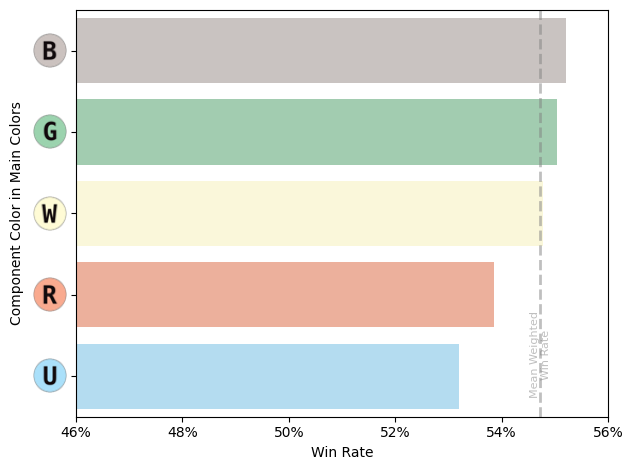
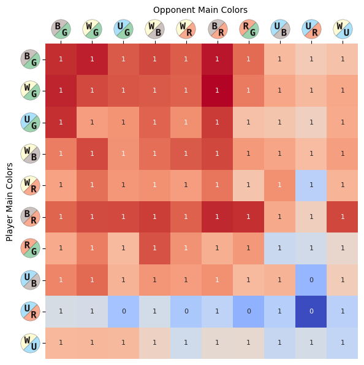
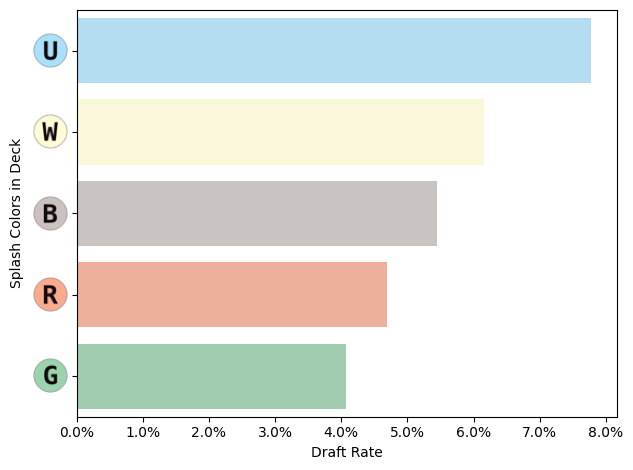
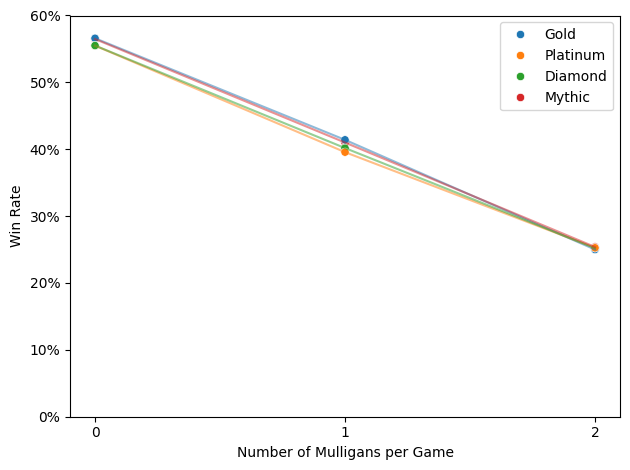

Bloomburrow (BLB) Arena Draft Analysis
EDA
Draft
BLB
Arena
Draft set analysis for Bloomburrow
1 Introduction
Drafting in Magic: The Gathering (MTG) is a complex and dynamic format that challenges players to adapt quickly, make strategic decisions, and understand the evolving meta of each new set. In this analysis, we explore the summary and draft data for Bloomburrow, focusing on draft-level insights without diving into individual cards. We use data from Bloomburrow Premier Drafts, recorded from the 17Lands user base in MTG Arena, a best-of-one draft format where players draft in a pool and play until they win 7 games or lose 3. The Bloomburrow set was released in Arena on July 30, 2024.
By examining deck performance, player strategies, and various in-game factors such as mulligans and turn counts, we aim to uncover the key elements that contribute to success in this draft environment. We’ll explore how factors like deck choice, player rank, sideboarding, and the number of turns impact win rates. Additionally, we’ll investigate gameplay differences when players go first versus second and highlight how player behavior evolves throughout a ranked season. Through this analysis, we provide valuable insights to help both seasoned and new drafters make more strategic decisions in the Bloomburrow draft format and beyond.
To see other analyses of MTG draft data, check out the Draft Analysis page.
2 Summary Data
Here we summarize key statistics from the data, reflecting the experiences of 17Lands players.
- Date Span: 2024-07-30 - 2024-08-18.
- Win Rate: 54.7%
- Mean Turns per Game: 8.9
- Total Drafts: 117,000
- Total Games: 680,000
- Mean Games per Draft: 5.8
3 Color Decks
We will explore the use and importance of colors in draft decks. We will look at the frequency of color sets in decks, the win rates of color sets, and the win rates of color pairs.
3.1 Color Frequency
We start by examining the frequency of decks drafted for each color combination in Figure 1. The ten two-color decks are the most common, aligning with the design intent of Bloomburrow, which focuses on ten two-color animal tribes. Mono-color and multi-color decks are far less common.
Since Bloomburrow is designed with 2-color tribal decks in mind, we’ll focus on these pairings. In Figure 2, we see the most frequent drafted decks are Black-Green, White-Green, and Red-White. On the other hand, the least drafted are Blue-Black, Blue-Red and White-Blue.

Figure 3 shows the color composition of the decks. Green stands out as the most frequently drafted color, with Black and White also being popular choices. In contrast, Red and Blue are drafted far less frequently.
The average draft use rate per component color is 40.0%.

Next, we examine the four decks with the largest absolute changes in use between the start and end of the time period, shown in Figure 4. The White-Green (WG) and White-Black (WB) decks exhibit the largest increases in use, while the Blue-Red (UR) and White-Red (WR) decks show the most significant decreases.

3.2 Color Win Rates
In addition to analyzing the use rates of the colors, we’ll also examine their win rates. First, we calculate the weighted average win rate, which is 54.7%. As highlighted in the summary section, this win rate suggests that the 17Lands player base performs better than the general draft player base.
Figure 5 presents the win rates for each color combination. While some mono-color decks have notably high win rates, their low use rates suggest that these results may be circumstantial due to small sample sizes.
In Figure 6, we focus on the 2-color decks. The Black-Red Lizards: Opponents Lose Life deck boasts the highest win rate, though it has a relatively low use rate. Meanwhile, the White-Red Rabbits: Go-Wide and Black-Green Squirrels: Forage decks are the most popular and also maintain high win rates.

Figure 7 shows the win rates for the five primary colors, based on whether they serve as a main component in a deck. For example, the “B” results reflect the win rates for Black in decks such as WB, BG, Mono-Black, and UBR.
The overall average win rate for the data is 54.7%. Decks featuring Black perform the best, achieving a 55.2% win rate. Green and White decks also perform well, with win rates of 55.0% and 54.8%, respectively. On the other hand, decks with Red and Blue underperform, with win rates of 53.8% and 53.2%.

3.3 Win Rate over Time
It’s also insightful to observe how the win rates for two-color decks evolve over time. I selected the four decks with the largest absolute changes in win rate between the start and end of the period. In Figure 8, we see that the White-Red (WR), White-Black (WB), and another White-Red (WR) deck start with high win rates but gradually decline over time. Conversely, the Blue-Red (UR) deck begins with a low win rate but shows an upward trend as time progresses.

3.4 Color Freq vs Win Rate
Next, let’s compare the use rate to the win rate to see if the player base is well-calibrated in their deck selections based on performance.
In Figure 9, we observe that most of the two-color decks align along a straight line, indicating a balanced relationship between use rate and win rate, with two notable outliers. The Blue-Red Otters: Non-creature Spells deck underperforms relative to its use rate, suggesting it may be over-selected. In contrast, the Black-Red Lizards: Opponents Lose Life deck is a hidden gem, boasting the highest win rates but being picked less frequently than the average two-color deck.
This under-selection of Black-Red likely stems from the general underperformance of Red, leading many drafters to avoid it unless they secure strong Black-Red cards early. On the other hand, White, Green, and Black perform well, making the BG, WG, and WB decks popular and flexible choices that players can easily pivot to during drafts.

3.5 Wedges vs Shards
Magic: The Gathering color theory includes five wedges and five shards. Wedges are three-color decks built around a primary color and its two allies, while shards consist of a primary color and its two enemies. Conventional wisdom suggests that wedges are generally easier to draft than shards.
However, as shown in Figure 10, the shards have a slightly higher win rate and use rate compared to the wedges. This finding is somewhat unexpected but the difference is minimal.
4 Opposing Player Colors
We also have data on the opposing player colors, which helps us understand the draft meta. For each draft color combination, we compare the use rate of 17Lands players with that of their opponents. Each combination is color-coded to indicate whether its win rate is above or below the average win rate of the 17Lands player base. A diagonal grey line is included to show parity between the use rates of 17Lands players and the general player base.
In Figure 11, we focus on the two-color drafts. The data reveals that White-Green (WG), Black-Green (BG), and Blue-Green (UG) decks are more favored by 17Lands players and also boast higher win rates. Conversely, the Blue-Black (UB) deck is favored but has a significantly lower win rate. The other color pairs show parity between the two player bases.
Looking at the non-2-color drafts in Figure 12, we observe that 17Lands players are far less likely to draft any color combination that isn’t a two-color deck. These non-2-color decks generally have lower win rates, with some exceptions in the mono White, Green, and Black decks.
This suggests that if a player is drafting mono White, Green, or Black, they may be better off staying mono rather than adding Blue or Red to create a two-color deck. However, since mono decks are drafted so infrequently, their strong performance might be circumstantial, depending on specific card combinations, and may not represent a consistent advantage across the entire color set.

5 Color Face-Offs (2-Color vs 2-Color)
Let’s now compare each pairing of the two-color decks in Figure 13. This comparison provides insights into the strengths and weaknesses of individual decks.
We start by examining the number of games played between each pairing. The rows and columns are sorted by the maximum frequency of player deck pairings, with Black-Green (BG) vs. White-Green (WG) being the most frequent, followed by WG vs. WG matchups. The average number of games played between each pairing is 5,031.
As noted earlier, 17Lands players draft BG, WG, and Blue-Green (UG) decks more frequently than their opponents, while the other color pairs are used at near parity.

Next, we examine the pair-wise win rates for players in Figure 14.
The most notable observation is that the 17Lands player base performs well in most matchups, with a significant exception for the Blue-Red (UR) deck. On average, UR matchups underperform by about 4 percentage points compared to similar matchups. Notably, the UR vs. UR matchup is exceptionally low and is the only like-paired matchup with win rates below 50%, indicating less than even odds of winning.
6 Color Splash
Splash colors are 1-3 non-land spell cards of a given color that enhance a deck without significantly diluting its main colors. These splash cards are often very powerful and can provide strategic advantages.
In Figure 15, we can see how frequently splashing occurs across different decks.
In Figure 16, we observe the frequency of splashing for each color. Blue is the most commonly splashed color, while Green is the least common.

7 Player Rank
To assess player skill, I plotted the number of wins by player rank. While I don’t have player IDs to track individual performance, this view provides an average performance snapshot of the player base. Additionally, since I cannot track the number of drafts per player, more frequent players will be over-represented in the data.
Although opponent rankings are not available, we can infer that most opponents are of similar rank due to Arena’s draft system, which matches players with similar records. Each ranked season lasts about a month, and ranks experience “rank decay” between seasons. This decay means that at the start of a new season, a player’s rank is lower, requiring them to play more games to regain their previous standing.
Therefore, our snapshot of each rank includes a mix of lower-skill players who have reached their peak at the end of the season and higher-skill players at the start of the season who are climbing back up the ranks.
In Figure 17 we see that most drafts are played by players in the Platinum ranks.
In Figure 18, we observe that win rates vary by rank, with higher ranks generally achieving higher win rates. The Bronze rank has by far the lowest win rate, reflecting new or less skilled players. Interestingly, the Silver rank shows the highest win rate, likely due to the influx of Gold and Platinum players who reset to Silver at the start of the season and quickly climb back up the ranks.

For each rank, I plotted the win rate for the last week of play compared to the earlier timeframe. In Figure 19, we see a decline in win rates for higher ranks but an increase in win rates for lower ranks. This pattern suggests that higher ranks may become more competitive as the season progresses, while lower ranks tend to become more casual.

Figure 20 shows the number of games played per draft for each rank. While not identical, the pattern closely mirrors the previous chart of win rates.
7.1 Ranks over Time
We then examine the number of drafts played at each rank over time in Figure 21. Since the BLB set was released two days before the season start, I truncated the data at 08-01 to avoid the effects of rank decay.
The initial days are chaotic, with the BLB set launching on 07-30, and 07-31 being the first full day of recorded games. On 08-01, the new ranked season began, causing rank decay, which is especially noticeable in Mythic and Diamond gameplay.
Starting on 08-01, we observe distinct patterns: Gold rapidly declines after an initial peak of 3,800 drafts per day. Platinum peaks during days 4-6 before dropping. Diamond shows a slower climb with a plateau between days 8-13, followed by a gradual decline. Mythic starts at zero and slowly climbs, reaching a peak of 500 drafts per day around days 13-16.
From this chart, it’s unclear how much of the decline at each rank is due to player advancement versus a loss of interest after the initial excitement of a new season. In the following charts, I will normalize the data to the total drafts played to better account for the overall decrease in gameplay.
Total Time Interval: 19 days 00:00:00
In Figure 22, we see the number of drafts played over time. It’s notable that the release of BLB and the start of the new season coincided, driving high player interest, with a peak of 11,300 drafts on 07-31. The rate of play decayed over the weeks, reaching a low of 3,100 on 08-17.
The decline is nearly monotonic, with slight increases on the Saturdays of 08-04 and 08-11, indicating that weekly seasonality has only a minor impact.
Releasing new sets clearly boosts player engagement. However, the introduction of the new season on 08-01 does not appear to have significantly increased play, though this observation is tentative. This data highlights the economic motivation for releasing new sets to drive digital engagement on Arena, and it’s likely that paper play would follow a similar trend, with increased draft activity consuming more booster packs in the weeks following a new set’s launch.
It would be valuable to compare this pattern across different set releases to better understand the player base’s set-by-set preferences.

Next, we normalize for the total games played to observe the relative ranked play across the player base, as shown in Figure 23.
This normalization highlights the relative activity at each rank more clearly. After the season starts, Gold exhibits a linear decay as players progress to Platinum. Platinum maintains a prolonged plateau, indicating a balance between new players entering the rank and existing players advancing.
Diamond and Mythic both start with minimal participation but gradually increase in play almost monotonically, albeit at different rates.

7.2 Low vs High Rank Players
Now, let’s compare player rank performance against success by focusing on the three two-color decks that were outliers in the previous use-rate versus win-rate chart.
| Deck | Use Rate | Win Rate |
|---|---|---|
| BG | High | High |
| BR | Low | High |
| UR | Very Low | Extremely Low |
In Figure 24, we analyze the overall performance of players using these decks, categorized by the week of play and whether the player is in the elite ranks of Diamond or Mythic.
For BG, the most played deck, performance across weeks and ranks shows no clear trend. However, for the BR and UR decks, which are less frequently played, players in both elite ranks demonstrated noticeable improvements in win rates from week one to week two. This suggests that the 17Lands player base adapted and learned to optimize these less favorable decks, regardless of their rank.
It’s important to note that during the first week of play, the Mythic and Diamond player base is relatively small.
8 Mulligans
Mulligans are a crucial strategy in MTG. If a player’s starting hand is not ideal, they can draw a new one, each time with one fewer card. This process can be repeated as needed, creating a challenging trade-off between a poor hand and a smaller one.
In Figure 25, we observe the distribution of mulligans by the number of re-draws. Most players do not take a mulligan; about 12% take one mulligan, and 2% take two. Very few players take three or more mulligans, with only two instances of a player taking five mulligans, resulting in a starting hand of just two cards.
We also see that 17Lands players are slightly less likely to take mulligans compared to their opponents, likely due to a combination of superior deck construction and more informed mulligan decisions.

A side note on probability distributions: the player mulligan distributions appear to resemble Poisson distributions, with the number of mulligans taken being a discrete event.
Using the mean number of mulligans per game, 0.136, I performed random sampling from a Poisson distribution with \(\lambda=0.136\). The results, shown in Figure 26, closely match the actual data, though the real data shows a slightly higher number of games with one mulligan and slightly fewer for other values.
We can further investigate this pattern when we explore the card data to identify random draw events that correlate with mulligan decisions, such as the number of lands in the starting hand.

We now examine the outcomes of games where mulligans occur. In Figure 27, we see a clear near-linear relationship between the number of mulligans and win rates, with win rates decreasing by approximately 15% for each mulligan taken.
When comparing 17Lands players to their opponents, the rate of win decay is consistent, maintaining an 8-9% gap in favor of 17Lands players at each mulligan level.
This data does not reveal the causal relationship between mulligans and win rates. It’s unclear whether mulligans are inherently detrimental or simply indicative of bad starting hands that would have had an even lower probability of winning. This question could be further explored using card data to assess the quality of starting hands that led to mulligans.

To determine if mulligan success varies by player rank, I plotted the win rates for each rank in Figure 28. The results show that win rates are very similar across all ranks, with no significant differences observed.

9 Turn Counts
The number of turns in a game is an important metric for assessing the speed of a set. In Figure 29, we see the distribution of turn counts for the Bloomburrow set, with an average of 8.9 turns per game.
Similar to the distribution seen in Figure 26, this turn distribution appears to resemble a Poisson distribution.
I’m also interested in how 17Lands players perform relative to the number of turns. In Figure 30, we observe that players are more likely to win games that end quickly. The win rate is 55-60% for games that conclude in fewer than 8 turns, dropping to 50-55% for games that last longer.
10 Builds
A player can rebuild their deck between games by utilizing their sideboard during a draft session. I wanted to explore how often players rebuild their decks and whether this impacts win rate. This analysis focuses on premier draft, a best-of-one format, where there is less incentive to rebuild a deck compared to a best-of-three format.
In Figure 31, we see that over 75% of draft sessions use the same deck build throughout. Only a tiny fraction of sessions feature more than two different builds.
In Figure 32, we observe the relationship between win rate and the number of rebuilds. Decks with more rebuilds tend to have lower win rates, but it’s unclear whether players are rebuilding more to salvage a poorly drafted deck or if rebuilding itself is a suboptimal strategy.
11 Starting Player
To assess the impact of going first or second, I plotted the win rates for each scenario. As shown in Figure 33, the win rate is significantly higher for the player who starts, with nearly a 7% advantage.
12 Conclusion
This analysis of the Bloomburrow draft data provides valuable insights into the dynamics of deck performance, player strategies, and overall gameplay within the set. Key findings include the strong influence of deck choice and mulligan decisions on win rates, the advantages of starting first, and the nuanced impact of rebuilding decks during draft sessions. We observed that players often align closely with expected use rates and win rates, but there are clear areas where player behavior diverges, such as the under-selection of high-performing but less popular decks like Black-Red.
The data suggests that set release timing, player rank progression, and strategic decisions such as mulligan frequency and rebuilding all play significant roles in shaping the draft meta. While certain trends, such as the consistent advantage of starting first, are clear, other factors like the impact of sideboarding and deck rebuilding require further exploration, particularly through a deeper analysis of card-level data.
Ultimately, understanding these patterns can help players refine their drafting and gameplay strategies, making more informed decisions to enhance their success in both digital and paper formats. Future work could focus on comparing these trends across different set releases to identify broader shifts in player behavior and preferences.